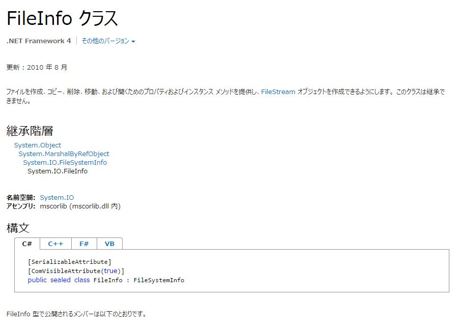
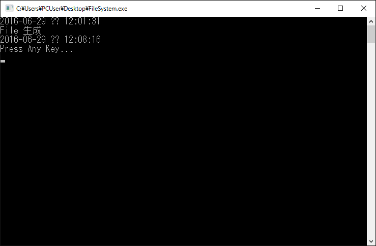
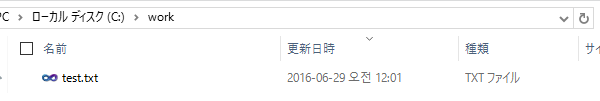
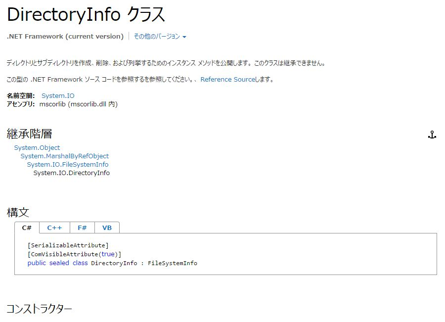
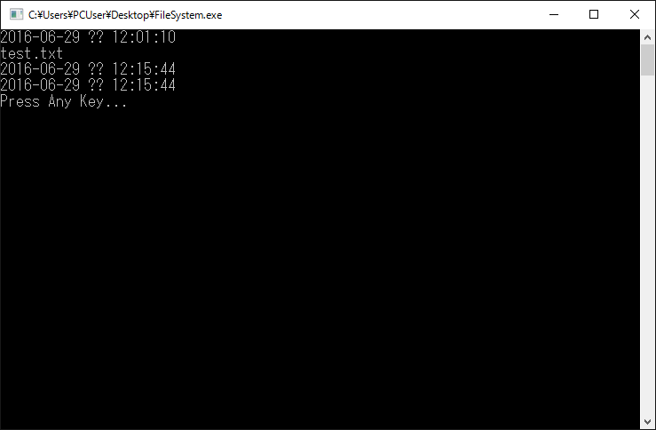
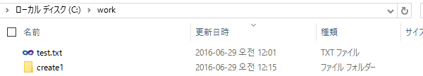

[C#] ファイルシステム(File System) - FileInfo,DirectoryInfo
こんにちは。明月です。
今日から「C#」の文法ではなく「C#.NetFramework」でよく使うクラス、システムについて勉強します。
C#でプロジェクトを構築して実装する時によく使うクラスとネームスペースがあります。 それはファイルを扱うもののファイルシステム、通信する時に使うソケットシステム、データを構造的に構成するXMLシステム,Jsonシステム等で「C#.NetFramework」から様々なモジュールシステムを提供しています。
その中で今日からはファイルを扱うクラスについて勉強します。
ファイルシステムは基本的にファイルとディレクトリを扱うクラ組です。体表的にファイルを扱うクラスは「FileInfo」とディレクトリを扱うクラスは「DirectoryInfo」があります。
FileInfo
下記のアドレスリンクは「FileInfo」のクラスの説明です。接続して確認をしてください。
MSDNリンク - FileInfo クラス

FileInfoのクラスはファイルを扱うクラスです。ファイルのコピー、削除、移動、プロパティ情報を閲覧する場合に「FileInfo」クラスを利用して実装します。
using System;
using System.Collections.Generic;
using System.Linq;
using System.Text;
using System.Threading.Tasks;
using System.IO;
namespace FileSystem
{
class Program
{
static void Main(string[] args)
{
//ファイル情報取得
FileInfo info = new FileInfo("C:\\work\\test.txt");
//ファイル生成時間
Console.WriteLine(info.CreationTime.ToString());
//ファイルコピー
FileInfo info2 = info.CopyTo("C:\\work\\test2.txt", true);
//ファイル生成可否
if (info2.Exists)
{
Console.WriteLine("File 生成");
}
Console.WriteLine(info2.CreationTime.ToString());
//ファイル削除
info2.Delete();
Console.WriteLine("Press Any Key...");
Console.ReadLine();
}
}
}
上の例を見ると「test.txt」を読み込んで生成日付を出力しています。そしてファイルをコピーしてまた生成日付を取得して最終には削除する流れで実装されています。


結果を見ると「test2.txt」のファイルは生成してすぐ削除する流れなので、「work」のディレクトリの中には「test.txt」ファイルが見えないですね。
DirectoryInfo
下記のアドレスリンクは「DirectoryInfo」のクラスの説明です。接続して確認をしてください。
MSDNリンク - DirectoryInfo クラス

DirectoryInfoのクラスはディレクトリを扱うクラスです。ディレクトリのコピー、削除、移動、プロパティ情報を閲覧する場合に「DirectoryInfo」クラスを利用して実装されています。
using System;
using System.Collections.Generic;
using System.Linq;
using System.Text;
using System.Threading.Tasks;
using System.IO;
namespace FileSystem
{
class Program
{
static void Main(string[] args)
{
//ディレクトリ情報取得
DirectoryInfo info = new DirectoryInfo("c:\\work");
Console.WriteLine(info.CreationTime.ToString());
//ディレクトリ中のファイルを情報を取得
FileInfo[] files = info.GetFiles();
foreach(FileInfo file in files)
{
Console.WriteLine(file.Name);
}
//ディレクトリ生成
info = new DirectoryInfo("c:\\work\\create1");
info.Create();
//ディレクトリ情報取得
Console.WriteLine(info.CreationTime.ToString());
//ディレクトリ生成
info = new DirectoryInfo("c:\\work\\create2");
info.Create();
//ディレクトリ情報取得
Console.WriteLine(info.CreationTime.ToString());
//ディレクトリ削除
info.Delete();
Console.WriteLine("Press Any Key...");
Console.ReadLine();
}
}
}
上の例は「work」ディレクトリの生成日付を取得して出力していますね。後で「work」のディレクトリの中でファイルを取得して「FileInfo」のクラスに返却していますね。
そして下記ディレクトリの「create1」、「create2」を生成して「create2」のディレクトリは削除します。


結果としては「create2」ディレクトリを削除したので「create」ディレクトリだけあります。
今回の投稿には「FileInfo」、「DirectoryInfo」を通ってファイルとディレクトリを扱う方法について勉強しました。その以外に「File」、「Directory」クラスでもFileInfoとDiretoryInfoクラスみたいに実装が可能ですが、C#には「FileInfo」、「DirectoryInfo」を利用して実装するのをMSDNから推奨しているので「FileInfo」と「DiretoryInfo」で実装することを確実に認知しておくほうが良いと思います。
- [C#] Thread(スレッド)2019/07/24 00:57:35
- [C#] 「IDisposable」と「using」2019/07/23 00:05:40
- [C#] ファイルシステム(File System) - FileStream、 Encoding、 Serializable2019/07/22 23:45:05
- [C#] ファイルシステム(File System) - FileInfo,DirectoryInfo2019/07/22 23:30:17
- [C#] MSDN(Microsoft Developer Network)2019/07/22 23:15:42
- [C#] Attribute(アトリビュート)2019/07/20 02:27:23
- [C#] Reflection(リフレクション)2019/07/20 02:22:03
- [C#] Objectタイプ、varタイプ(匿名タイプ)、dynamicタイプ2019/07/18 22:50:16
- [C#] Partial Type(クラス分割)、拡張メソッド2019/07/18 20:22:16
- [C#] Lamda(ラムダ)2019/07/17 23:06:42
- [C#] LINQ(リンク)-3 (Enumerableクラス)2019/07/17 20:57:00
- [C#] LINQ(リンク)-2 (メソッド式)2019/07/16 22:40:03
- [C#] LINQ(リンク)-12019/07/16 20:41:27
- [C#] event(イベント)2019/07/16 00:59:34
- [C#] delegate(デリゲート)2019/07/16 00:48:03
- [Java] Base64にエンコード、デコードする方法2020/03/09 10:24:01
- [Java] cmdコマンドを実行するための方法2020/03/06 18:01:10
- [Java] メール(javax.mail)を発送する方法2020/03/05 20:07:49
- [Java] クラス複製(Clonable, Reflection)2020/03/05 00:03:19
- [Java] シリアライズ(直列化: Serializable)2020/03/03 00:03:33
- [Java] StringBuilderとStringBufferの差異2020/03/02 07:52:22
- [Java] Compare関数を使う方法2020/02/29 03:00:00
- [Java] 数字フォーマット(お金表示及び小数点以下表示)2020/02/28 03:00:00
- [Java] サーブレット環境で現在の実行ディレクトリを取得する方法2020/02/27 03:00:00
- [Java] 日本語をユニコードに変換して、ユニコードから日本語に変換する方法2020/02/26 03:00:00
- [Java] コンソールからデータを受け取る方法(System.in)2020/02/25 03:00:00
- [Java] Servlet環境でWebSocket通信中、HttpSessionを取得する方法2020/02/24 07:47:20
- [Java] WebSocketでWeb Sessionを使う方法(Broadcast)とウェブチャットの例2020/02/22 03:00:00
- [Java] WebSocket (ウェブソケット)2020/02/21 03:00:00
- [CakePHP] Errorページを設定する方法2020/02/20 03:00:00